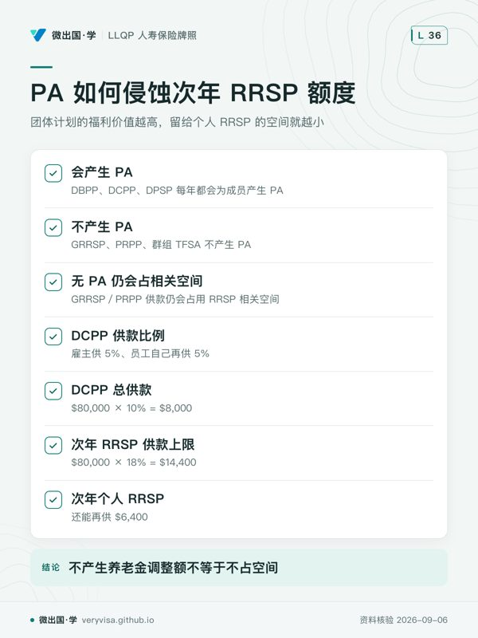

🃏 Flashcards · 3 闪卡 · 3 张 🖼 Slides · 2 幻灯 · 2 页 ✍️ Questions · 7 刷题 · 7 道
分离基金与年金 Segregated Funds & Annuities P3 过一遍 P3 Skim
ZH EN ZH + EN
先看这一章怎么考 First, how this chapter is tested
六类计划匹配题：题干给出雇主诉求（如“只想在有盈利的年份出资”“希望员工也能自己供款”“不想承担精算兜底责任”），考你用“谁供款”和“谁承担投资风险”两条独立分类线选出唯一匹配的计划类型。 Matching six plan types to employer objectives: Scenarios present employer needs (such as contributing only in profitable years, allowing employees to make their own contributions, or avoiding actuarial funding liabilities), testing candidates on selecting the uniquely matching plan type using the two distinct criteria of contributor identity and bearer of investment risk. PA 与 RRSP 供款空间计算题：给出员工年收入及 DCPP 或 GRRSP 的劳资配比比例，考你区分哪些计划产生养老金调整额（PA）侵蚀次年额度、哪些计划直接占用当年个人 RRSP 供款空间。 Calculating PA and RRSP contribution room: Given employee annual earnings and employer-employee matching contribution ratios in a DCPP or GRRSP, testing whether candidates distinguish which plans generate a Pension Adjustment (PA) reducing next year's RRSP room versus which plans directly consume current-year individual RRSP deduction limit. 离职资金去向与锁定规则题：员工在跳槽或退休时处理账户余额，考你区分锁定资金（转 LIRA/LIF）与非锁定资金（转个人 RRSP/RRIF 或提现），以及考试口径“两年归属”与 BC 现行 PBSA 即时归属的双口径差异。 Termination fund transfers and locking-in rules: When employees handle account balances upon job change or retirement, testing the distinction between locked-in funds (transferred to a LIRA or LIF) and unlocked funds (transferred to an individual RRSP, RRIF, or cashed out), alongside the dual-benchmark differences between the exam standard of two-year vesting and current BC PBSA immediate vesting. 最常丢分的陷阱（看到题干信号就警觉） Traps that cost the most marks (watch for the signal in the stem)
DPSP 缴费型陷阱 The contributory DPSP trap 题干同时出现 profit sharing 与 employees also contribute / contributory plan。 The question stem mentions profit sharing alongside employees also contribute or contributory plan. PA 全覆盖错觉 The universal PA coverage illusion 题干问哪些计划会产生 Pension Adjustment (PA) 减少次年 RRSP 空间，或直接给出 GRRSP 供款问次年 PA 是多少。 The question stem asks which plans generate a Pension Adjustment (PA) reducing next year's RRSP room, or provides GRRSP contribution amounts and asks for the resulting PA. 雇主供款免税错觉 The tax-free employer contribution illusion 题干问雇主配比供款（matching contribution）在当年报税时是否计入员工的 taxable income。 The question stem asks whether employer matching contributions are included in the employee's taxable income for the current tax year. 本章考点页：导图、要点表、7 道带逐项解析的练习 →
核实日期：2026-09-06｜考纲位置：Seg c2（分析产品——基金构成、分离基金 vs 其他投资、年金类型、团体退休计划，占本模块 30% 权重）子组件 2.4。
复核周期：本页含多个联邦年度数字（CPP2/YAMPE、RRSP/DPSP 限额），年度数字在下一年度复核（下次 2027-01-31）。
这一章的视角和前面几章都不一样：代理人服务的不再是坐在对面的个人客户，而是一家公司的发起方（sponsor） ——通常是雇主本人或人力资源负责人——他们要为一整批员工设计一套退休储蓄安排。前几章讲的分离基金、年金保证、投资者画像，本章会全部重新出现一次，但每次出现都多了一层新的问题：谁来决定投资什么、谁承担投资亏损的风险、员工离职时钱怎么办。读完这一章，你要能做三件事：把 DBPP、DCPP、DPSP、GRRSP、PRPP、群组 TFSA 六种团体计划按"谁供款"和"谁承担投资风险"两条独立的分类线摆清楚，不靠死记硬背名字；算对养老金调整额（PA）如何侵蚀员工次年的 RRSP 供款空间，以及考试口径完全没有覆盖的 CPP 增强二阶段如何改变高收入客户的退休收入规划；分清哪些数字还是 2022 年考试口径的旧值、2026 年真实客户与雇主看到的官方数字已经变成了多少。
ℹ️
这一章不是"团体保险"
团体人寿与团体伤残（disability）保险在其他章节已经展开，本章只讲退休与投资类 的团体计划——发起方为员工设立的储蓄账户，不是保障身故或伤残收入损失的保险产品。两者常常由同一位代理人服务同一家公司，但监管框架、合同结构、税务处理完全不同，不要混着记。
一、制度设计与底层逻辑：发起方、管理方、成员、保险人，四方各自的义务边界 本节回答 This section answers 四方角色分工、受托监督责任，以及归属与锁定的法律边界 Four-party role division, supervisory fiduciary duties, and the legal boundaries of vesting and locking in 本章考题 1 Question 1
团体退休计划的法律结构里有四个角色，理解他们各自的义务边界，是整章的地基。发起方（plan sponsor） 通常就是雇主，负责设计计划、决定给付结构、承诺出资安排；管理方（plan administrator）可能是发起方自己兼任，也可能外包给专业机构，对受 PBSA 规管的养老金，法定管理方承担受托职责（fiduciary）；GRRSP、DPSP、TFSA 等另核各自法律及合同——这意味着他们必须遵循"审慎人原则"（prudent person rule），以计划成员与受益人的最佳利益行事，这不是一句公关口号，而是有法律责任后果的义务标准。成员（members）是真正把钱放进去的员工。保险人（insurer）是资金实际持有与投资运作的一方，定期向发起方提交财务报告。
这套结构的第一层设计逻辑是缴费型（contributory）vs 非缴费型（non-contributory） ：发起方与成员共同出资是缴费型，只有发起方一方出资是非缴费型——后面会看到，只有一种计划天生只能是非缴费型。第二层设计逻辑是给付是否确定：发起方承诺一个确定的退休给付公式、自己兜底投资表现缺口，还是把投资决策权和投资风险都转移给成员、自己只按固定比例出钱了事。这两条线互相独立，交叉组合出后面要讲的五到六种计划类型，混着记是这一章最容易丢分的地方。
法律后果须把归属（vesting）与锁定（locking-in）分开。BC 受 PBSA 规管养老金自 2015-09-30 即时归属，成员依法对已赚取的雇主及本人供款福利享有权利；考试口径两年归属例子只能按题干年代或其他计划类型理解。锁定保障退休用途，可涵盖雇主及成员必须供款与收益；额外自愿供款及法定解锁例外另判。DPSP 不适用同一套 PBSA 锁定规则，其归属另受 ITA 条件约束，不能给六类计划统一写“三年以内”。
BC 对受本省 PBSA 规管的雇主养老金的监管，法律依据是《养老金福利标准法》（Pension Benefits Standards Act, PBSA） ，配套《养老金福利标准条例》，监管机构是 BCFSA。计划管理方须在计划设立后 60 天内向 BCFSA 完成注册，须按 PBSA 相关条款每三年做一次计划评估（triennial assessment），并在每个会计年度结束后 180 天内提交年度信息申报。这条监管链路考试口径完全没有点名具体法律，只泛称"适用的省级养老金福利立法"——BC 代理人在实务中必须知道背后具体是哪部法。
🔧
受托责任不是发起方一个人扛
发起方即便把日常投资管理外包给保险人或专业管理方，法定管理方不能因外包而免除监督责任；发起方是否兼任管理方须先核实 ——审慎人原则约束的是"发起方作为受托人"这个身份，不因为委托了服务商就转移。代理人向发起方推荐计划时，说清楚这一点，是一项有真实职业责任后果的披露义务，不是可有可无的提醒。
节末检索小测 · 先别往回翻，凭记忆作答 Quick recall check: answer from memory before scrolling back
An employer establishes a pension plan governed by provincial pension legislation and acts as the legal plan administrator, while contracting an insurer to hold and invest the plan assets. Within how many days of establishing the plan must the administrator register it with the provincial regulator in BC, and how often is a plan assessment required?
一位雇主设立了受省级养老金立法规管的养老金计划并担任法定计划管理方，同时委托一家保险人持有并投资计划资产。在 BC 省，管理方必须在计划设立后多少天内向省级监管机构完成注册，且每隔多久须进行一次计划评估？
a Register within 60 days of establishment and conduct a triennial assessment every three years. ✓ 正确。根据 BC《养老金福利标准法》（[Pension Benefits Standards Act, PBSA]），计划管理方（[plan administrator]）须在计划设立后 60 天内向 BCFSA 完成注册，并每三年进行一次计划评估（[triennial assessment]），同时在每个会计年度结束后 180 天内提交年度信息申报。 Correct. Under the BC Pension Benefits Standards Act (PBSA), the plan administrator must register the plan with BCFSA within 60 days of establishment, conduct a triennial assessment every three years, and file an annual information return within 180 days after the end of each fiscal year.
b Register within 180 days of establishment and conduct an assessment every two years. ✗ 错误。180 天是每个会计年度结束后提交年度信息申报的时限，不是设立注册时限；两年是考试口径常举的归属期（[vesting]）例子或 DPSP 税法归属上限，不是三年一次的计划评估周期。 Incorrect. The 180-day deadline applies to filing annual information returns following the fiscal year-end, not initial registration; two years is a legacy vesting example or the DPSP tax limit, not the three-year plan assessment cycle.
c Register within 60 days of establishment, after which the insurer assumes all assessment duties. ✗ 错误。虽然注册时限是 60 天，但法定管理方承担受托职责（[fiduciary duty]），不能因为把投资运作外包给保险人（[insurer]）就免除自身的监督与合规评估责任。 Incorrect. Although the registration period is 60 days, the legal administrator retains a fiduciary duty and cannot be relieved of its supervisory and assessment obligations simply by outsourcing investment operations to an insurer.
d Register within 180 days of establishment, as long as all plan benefits vest immediately. ✗ 错误。混淆了年度申报时限（180 天）与注册时限（60 天），且即时归属（[immediate vesting]）是成员对已赚取福利的法定权利，不能替代管理方的注册义务。 Incorrect. Confuses the annual reporting deadline (180 days) with the initial registration deadline (60 days); moreover, immediate vesting is a statutory entitlement of members to accrued benefits and does not waive the administrator's registration duty.
看答案与每个选项的解析 Show the answer and why each option is right or wrong 答案 Answer ：a
二、2026 现行政策与数字：六种计划怎么分类、CPP 之上要补多少、钱锁在哪里 本节回答 This section answers 六类计划供款与税效、CPP 两层封顶计算、PA 公式与解锁 Six plan contributions and tax effects, two-tier CPP cap calculations, PA formula, and unlocking rules 本章考题 2 Question 2
六类团体计划核心区别表
图：六种团体计划怎么分类——谁供款与谁承担投资风险是两条独立分类线
用两条独立的分类线——"谁供款"和"给付是否确定 / 谁承担投资风险"——把六种计划摆进同一张表，比死记名字更抗遗忘：
分类要点：DBPP 按给付公式确定权益，DC 则把退休金额与供款及投资表现相连。成员能否选投资要看计划设计，不能只凭 DC、DPSP 或 PRPP 名称推定一定自行选基金。DPSP 只允许雇主供款；其他计划也可设计成雇主单独出资，因此“DPSP 必须非缴费型”不等于“只有 DPSP 可以非缴费型”。GRRSP 与群组 TFSA 的雇主供款都可能是员工应税福利，不能把 GRRSP 写成六类中唯一须计当期收入。RRSP 雇主供款的 CPP／EI 扣缴还须核提款限制，RRSP 抵扣可能抵消应税福利，却不改变两笔项目分别报告的性质。
CPP 三层：基础层、增强一阶段、增强二阶段（YAMPE），团体计划在它之上补什么
考试口径只讲了 CPP 的第一层：基本供款豁免额 $3,500 （长青未变）、YMPE（年度最大可计提收入）2026 = $74,600、可计提收入上限即 $74,600 − $3,500 = $71,100。这一层的具体费率考试口径已有系统讲解，这里不重复，重点是考试口径完全没有覆盖的部分。
2019 年起联邦分阶段推行的 CPP 增强方案 ，到 2024–2025 年已经全部落地为一套两层结构：第一层仍以 YMPE 为上限；第二层是增强二阶段（CPP2），天花板叫 YAMPE（年度最大追加可计提收入），2026 年 = $85,000。YMPE 与 YAMPE 之间的 $10,400 收入区间，按 4% 费率（劳资各自缴纳）计提 CPP2，双方年度最高各缴 $416。也就是说，年收入超过 $74,600 的员工，退休收入的"政府保障层"现在分两段计算，而不是考试口径写的一段。
YAMPE 是 CPP 第二层可计供款收入上限，不是退休后可领 $85,000 的保证，也不是 CPP 与 OAS 的共同天花板。CPP 给付取决于实际供款历史和起领年龄；增强福利逐年累积，刚缴 CPP2 不等于马上取得完整增强养老金。OAS 主要看年龄、居民年限等条件，并另有按收入计算的回收机制，不能套 YAMPE。团体计划应补的是按退休开支与实际养老金估算出的缺口，低于 YAMPE 的客户也可能需要补充储蓄。
算一遍供款（示例） ：年收入 $90,000 已超过 2026 YAMPE $85,000；第二层计费区间 $85,000−$74,600＝$10,400，劳资各缴 $10,400×4%＝$416。超过 YAMPE 的 $5,000 不再产生 CPP 供款。这个算式只证明当年缴费封顶，不能直接推导退休每年领取多少，也不能用 $85,000 作为团体计划开始补缺口的起点。
养老金调整额（PA）算例：团体计划怎么"偷走"次年的 RRSP 额度
PA（pension adjustment，养老金调整额） 衡量的是员工当年在团体计划里积累了多少福利价值,DBPP、DCPP、DPSP 每年都会为成员产生 PA，而 GRRSP、PRPP、群组 TFSA 不产生 PA——这是判断是否产生 PA 的分界；GRRSP／PRPP 虽无 PA，供款仍会占用 RRSP 相关空间。公式是：
简化示例的次年新增空间 = max(0, min(本年 earned income × 18%, 次年 Dollar Limit) − 本年 PA)
此式假设没有未用结转、PAR、PSPA 及其他调整；个人实际限额以 CRA 记录并结合当年交易核实。
举例：员工年收入 $80,000，参加公司 DCPP，雇主供 5%、员工自己再供 5%，当年 DCPP 总供款 = $80,000 × 10% = $8,000 ，这 $8,000 就是当年 PA。次年 RRSP 供款上限 = $80,000 × 18% = $14,400，减去 PA $8,000，次年个人 RRSP 还能再供 $6,400。这个员工如果没参加 DCPP，次年 RRSP 空间原本会是全额 $14,400——团体计划的福利价值越高,PA 越大,留给个人 RRSP 的空间就越小,这不是巧合,是制度设计上"退休储蓄总额度全国统一"的必然结果：政府不会让一个人同时在团体计划和个人 RRSP 里各自拿到一份全额税收优惠。
配套还有两个调整机制：PAR（养老金调整反转） ——若成员中途离职导致全年估的 PA 高于实际应得,差额以 PAR 形式恢复 RRSP 空间;PSPA（追溯服务养老金调整）——发起方追溯性提高福利(如给全员追加服务年限)时产生,会进一步压缩当年 RRSP 供款空间。这两项考试口径都有讲,机制长青不随年份变化,这里不重复展开。
锁定资金家族：LIRA/LIF 与 BC PBSA 解锁规则
DCPP 与 PRPP 的钱是锁定的,离职或退休时不能直接拿现金,而是转入 LIRA（锁定退休账户） 继续锁定自主投资,或转入 LIF（生命收入基金）开始按年度上下限领取收入——这条转换关系类比个人 RRSP 转 RRIF,区别是 LIF 有法定的年度提取上限（RRIF 只有下限,没有上限）。GRRSP 通常没有养老金法锁定，但可能有合同提款限制；自有 RRSP 到满 71 岁当年年底可提款、转 RRIF 或买合资格年金。DPSP 的归属、付款及转移按自己的 ITA 条件办理，不能视为完全相同的账户。
联邦 PRPP 的直接解锁有特定条件：预期寿命因残障缩短须有医疗证明并依计划；非居民须已至少两年不是加拿大居民，且不再受雇于该参与雇主；小额余额须严格低于适用事件年度 YMPE 的 20%，并满足终止或身故等条件。2026 算例为 $74,600×20%＝$14,920，不是“等于也可”。这些是联邦 PRPP 账户规则，转入锁定收入工具后可能有不同选项；不能套到 BC LIRA/LIF，也不能写成所有 PRPP 全国只有这三种解锁方式。
BC受PBSA规管的退休金计划自2015-09-30采用即时归属（BCFSA ）。归属指对已赚取福利的权利，不等于可以立即取现金。LIRA/LIF的解锁要符合困难、小额、永久离境或预期寿命缩短等法定条件；BC没有一次解锁50%的选项，申请交持有资金的金融机构（BCFSA（论坛解读） ）。
⚠️
锁定与归属分别判断
本人必须供款、雇主供款及相关收益都可能被锁定，并非只锁雇主部分。即时归属回答“权益归谁”，锁定回答“能否拿现金”；BC 的额外自愿供款及法定解锁等例外须另外核实。
节末检索小测 · 先别往回翻，凭记忆作答 Quick recall check: answer from memory before scrolling back
In 2026, an employee earns $90,000 in pensionable employment income. Given the 2026 YMPE of $74,600, the basic exemption of $3,500, and the YAMPE of $85,000 with a 4% second additional contribution rate, what is the employee's second-tier (CPP2) contribution for the year?
2026 年，一名员工赚取了 $90,000 的可计提雇佣收入。已知 2026 年 YMPE 为 $74,600，基本豁免额为 $3,500，YAMPE 为 $85,000，第二层追加供款费率为 4%，该员工当年的第二层（CPP2）供款额是多少？
a 4% of the full $85,000 YAMPE ceiling, because the second tier replaces the first-tier YMPE. ✗ 错误。掉入“把 YAMPE 全额计提 4%”的陷阱。CPP 第二层（[CPP2]）只对超过 YMPE（$74,600）至 YAMPE（$85,000）之间的 $10,400 区间计提 4%，而不是替代第一层或从零起算。 Incorrect. Falls into the trap of applying the 4% rate to the entire $85,000 YAMPE. Second-tier CPP (CPP2) applies 4% solely to the $10,400 earnings band between the YMPE ($74,600) and YAMPE ($85,000), rather than replacing the first tier or calculating from zero.
b $416, calculated as 4% of the $10,400 earnings band between the $74,600 YMPE and the $85,000 YAMPE. ✓ 正确。2026 年年度最大可计提收入（[YMPE]）为 $74,600，年度最大追加可计提收入（[YAMPE]）为 $85,000，两者之间的第二层计费区间为 $85,000 − $74,600 = $10,400，劳资各自按 4% 缴纳 $416；超过 $85,000 的 $5,000 不再产生 CPP 供款。注：考试口径（2022）仅按第一层 YMPE 出题，题干明确给出 2026 年及 YAMPE 时按双层现行规则作答。 Correct. For 2026, the Year's Maximum Pensionable Earnings (YMPE) is $74,600 and the Year's Additional Maximum Pensionable Earnings (YAMPE) is $85,000; the second-tier band between them is $85,000 - $74,600 = $10,400, resulting in a 4% contribution of $416 each from employer and employee; earnings exceeding $85,000 incur no further CPP contributions. Note: The exam standard (2022) tests only the first-tier YMPE, but candidates apply the two-tier rules when questions explicitly specify 2026 and YAMPE.
c 4% of the $5,000 earnings above the $85,000 YAMPE ceiling, plus the $3,500 basic exemption. ✗ 错误。YAMPE（$85,000）是第二层的封顶天花板，员工收入中超过 $85,000 的那 $5,000 不再产生任何 CPP 供款。 Incorrect. The YAMPE ($85,000) is the absolute ceiling for the second tier; the $5,000 of earnings above $85,000 does not generate any CPP contributions.
d 4% of the $71,100 first-tier pensionable earnings band between $3,500 and $74,600. ✗ 错误。$74,600 − $3,500 = $71,100 是第一层基础层的可计提收入区间，不能当作第二层（CPP2）的 $10,400 计费区间。 Incorrect. The $74,600 - $3,500 = $71,100 range represents the first-tier base contributory earnings band and cannot be substituted for the second-tier (CPP2) $10,400 band.
看答案与每个选项的解析 Show the answer and why each option is right or wrong 答案 Answer ：b
三、实务流程：代理人在团体计划里到底做什么 本节回答 This section answers 资格系数审查、先团后个两阶段流程、转移沟通与持续复核 Eligibility factor review, two-stage master then individual enrolment process, transfer communication, and ongoing reviews 本章考题 3 Question 3
代理人服务的对象是发起方,不是成员本人,这意味着披露义务的方向也变了 :代理人必须向发起方披露合作的保险人是谁、自己的报酬方式、是否存在利益冲突——这是公平对待客户(FTC)原则在团体场景下的具体落地。实务上代理人的工作大致分四步:
第一步是计划规格审查 ,核对发起方现有计划(如果已经有)的给付资格公式是否合理。给付资格公式常见形式是"年龄 + 服务年限"之和达到某个数字(俗称 qualifying factor,如"85 factor"),这个数字本身可以是 85、90、75,由计划设计而定,不是固定为 85——55 岁 + 30 年服务 = 85,若计划要求"85 factor"即可 55 岁领全额退休金,未满足门槛的员工可能只能领按比例削减的部分养老金。
第二步是团体计划文件流程 :与个人保单不同,团体计划走的是"发起方先申请、保险人核保后成员再各自申请加入"的两阶段流程——发起方申请建立整个计划的合同关系,单个员工再通过入会证明、受益人指定表、豁免表等一系列成员表格完成个人层面的加入手续。这个"先团后个"的顺序本身就是一个容易被考到的流程细节。
第三步是账户转移场景处理 。DBPP 换算价值转移时容易出现"精算折现值低于成员直觉预期"的落差问题,代理人要提前向发起方与成员说明;DCPP 转移时投资选项会跟着变化(新雇主计划的基金池不同于旧雇主);转入 LIRA 则能摆脱"计划之间投资选项来回切换"的麻烦,代价是暂时不产生收入。
第四步是年度复核与情况变化通报 ——发起方的工作力构成发生变化(大规模招聘或裁员)、公司破产清算等计划终止情形出现时,代理人有义务及时通报并协助调整计划设计,这属于保障期内持续服务的一部分,不是"卖完计划就结束"的一次性交易。
✕
团体计划的分销链条比零售分离基金短一环
个人分离基金与零售人寿保险的分销链条里,MGA(managing general agent,总代理)往往是代理人与保险人之间的重要中介层;但团体退休计划的分销结构更直接——代理人与发起方、管理方之间通常是直接三方关系,保险人一端由"团体专员(group specialists)"对接,考试口径示例未列 MGA；实际分销是否经中介须核具体安排，不能推定全市场都没有。把零售渠道里 MGA 的角色简单类比到团体退休金场景,是一个容易搞混分销结构的陷阱;这条差异本身也提醒代理人,团体计划的报酬结构与零售产品不是同一套逻辑,披露义务的具体内容也需要相应调整。
节末检索小测 · 先别往回翻，凭记忆作答 Quick recall check: answer from memory before scrolling back
A defined benefit pension plan uses an '85 factor' as its qualifying factor for an unreduced pension. An employee who joined the plan 30 years ago is now 55 years old. How does this qualifying factor apply to the employee's retirement benefit?
一项固定给付养老金计划使用“85 系数”作为领取全额养老金的给付资格系数。一名 30 年前加入该计划的员工现年 55 岁。这一给付资格系数如何适用于该员工的退休福利？
a The employee must wait until age 71 because 85 is only a statutory maximum age limit. ✗ 错误。给付资格公式系数（[qualifying factor]）是“年龄 + 服务年限”之和，不是年龄上限；71 岁是注册计划最迟转出或开始领取的税法年龄限制。 Incorrect. The qualifying factor formula is the sum of age plus years of service, not an age ceiling; age 71 is the statutory deadline under tax legislation to collapse or convert registered plans into retirement income.
b The employee only qualifies for a reduced pension because the national statutory factor is fixed at 90. ✗ 错误。掉入“把某个系数当成全国统一标准”的陷阱。给付资格系数由各计划自行设计（可以是 85、90 或 75），不存在全国固定为 90 的法定标准。 Incorrect. Falls into the trap of assuming a qualifying factor is universally fixed by law. The factor is determined by the specific plan design (such as 85, 90, or 75); there is no mandatory nationwide standard fixed at 90.
c The employee qualifies for a full unreduced pension because age 55 plus 30 years of service equals 85. ✓ 正确。给付资格公式系数（[qualifying factor]）由“年龄 + 服务年限”相加判定；该员工 55 岁加上 30 年服务年限正好等于 85，达到计划设定的“85 factor”门槛，因此可在 55 岁领取全额未削减养老金。 Correct. A qualifying factor is calculated by adding the member's age and years of service; this employee at age 55 with 30 years of service totals exactly 85, satisfying the plan's 85-factor threshold and qualifying for a full, unreduced pension at age 55.
d The employee can unlock 50% of the commuted value in cash immediately under BC pension rules. ✗ 错误。85 系数是领取全额养老金的资格门槛，与解锁无关；且 BC PBSA 下没有一次解锁 50% 的选项。 Incorrect. The 85 factor determines eligibility for an unreduced pension and has nothing to do with unlocking; furthermore, BC PBSA does not provide a 50% unlocking option upon retirement.
看答案与每个选项的解析 Show the answer and why each option is right or wrong 答案 Answer ：c
四、2026 市场:谁在卖、产品叫什么、柜台怎么说 本节回答 This section answers PRPP 对中小雇主的低合规成本定位、自动加入与多边监管 PRPP low-compliance-cost positioning for small employers, automatic enrolment, and multilateral regulation
Manulife 官网 2026 年现行团体退休产品线明确包含 RPP(含 DC)、RRSP、DPSP、PRPP、VRSP、TFSA、DB Investment Only 与自有品牌的团体年金产品;其 PRPP 独立产品页说明 PRPP 是"简化版 DCPP",面向中小企业与自雇者,雇主可自主决定是否供款、供款多少、多久供一次,且由保险人代管计划、雇主承担的受托责任比其他团体计划更轻,支持自动加入(automatic enrolment)——这正是考试口径"PRPP 为无力承担传统计划合规成本的中小雇主设计"这一定位的 2026 年现行实例。
iA Groupe financier 官网确认的团体退休产品线覆盖 DC RPP、SPP、Group RRSP、LIRA、DPSP、Group TFSA、VRSP、PRPP、IPP——其中 Group FHSA(团体版首次购房储蓄账户) 是考试材料没有覆盖到的新产品:个人 FHSA 已确认是 2023 年才上线、考试口径来不及收录的产品,而团体版 FHSA 更进一步,意味着发起方现在可以把"帮员工存首付"作为团体福利的一部分来设计。这一条目前只在一家保险人官网确认,尚未扩大核实是否为行业普遍现象,标注待深研,不宜当作"所有保司都有团体 FHSA"来推荐。
BCFSA 官网《BC 固定供款注册养老金计划管理方指南》明确了本章前面提到的监管链路:BC 团体退休金计划的省级法律是《养老金福利标准法》(PBSA),计划管理方是受托人,须遵循审慎人原则,须完成注册、三年一次评估、年度信息申报等一系列合规时限——这份指南直接对应考试口径里"发起方须向省级监管方登记"这句泛称,把它落到了 BC 具体的法律名称与监管机构上。
PRPP 的法域覆盖 ：不能把旧 CRA 问答中的联邦行业／地区介绍当成 2026 全国完整名单。OSFI 的多边协议说明，BC、Nova Scotia、Quebec、Saskatchewan、Ontario、Manitoba 与联邦原已参与，New Brunswick 于 2023-05-01 加入。协议协调许可、注册与监管，魁北克 VRSP 仍有自己的制度；雇主准入、成员权益与解锁条件继续按适用法域判断。
ℹ️
"团体计划找哪家保险人"不等于"选哪种计划类型"
上面几家的产品名称(FutureStep、Group IncomePlus 等)是各保险人自己的品牌命名,不是计划类型本身——考试只考六类计划的机制区别(DB/DC/DPSP/GRRSP/PRPP/群组 TFSA),不会考具体品牌名。柜台工作里两者都要分清:跟客户谈的是品牌产品,跟考官谈的是底层的计划类型。
节末检索小测 · 先别往回翻，凭记忆作答 Quick recall check: answer from memory before scrolling back
A small business owner wants to offer a retirement savings arrangement but is unwilling to take on the heavy fiduciary and administrative burdens of a traditional pension plan. Why is a Pooled Registered Pension Plan (PRPP) specifically suited to this employer?
一位小企业主希望提供退休储蓄安排，但不愿承担传统养老金计划沉重的受托与行政管理负担。为什么联合注册退休金计划（PRPP）特别适合这类雇主？
a Because the insurer administers the plan, easing the employer's fiduciary load, and employer contributions are optional. ✓ 正确。联合注册退休金计划（[Pooled Registered Pension Plan, PRPP]）专为无力承担传统计划合规成本的中小雇主与自雇者设计，由保险人代管计划、减轻雇主受托责任，支持自动加入（[automatic enrolment]），且雇主可自主决定是否供款。 Correct. The Pooled Registered Pension Plan (PRPP) is designed for small employers and self-employed individuals who cannot bear the administrative costs of traditional plans; the insurer administers the plan, easing the employer's fiduciary burden, automatic enrolment is supported, and employer contributions are optional.
b Because a PRPP guarantees a fixed lifetime benefit formula that is funded entirely by the insurer itself. ✗ 错误。按固定公式承诺终身给付的是固定给付养老金计划（[DBPP]）；PRPP 属于简化版固定供款安排，退休金额取决于供款与投资表现。 Incorrect. Promising a lifetime pension based on a fixed formula is a feature of a Defined Benefit Pension Plan (DBPP); a PRPP operates as a streamlined defined-contribution arrangement where retirement income depends on contributions and investment performance.
c Because PRPP funds are never locked in and can be withdrawn by employees in cash at any time they choose. ✗ 错误。PRPP 的资金是锁定的（[locked-in]），离职时只能转入 LIRA、LIF、另一个 PRPP 或购买年金，不能随意提现。 Incorrect. Funds within a PRPP are locked in; upon termination they can only be transferred to a LIRA, a LIF, another PRPP, or used to purchase an annuity, and cannot be freely withdrawn in cash.
d Because only employees owning 10% or more of the company are permitted to join a PRPP. ✗ 错误。把 DPSP 的“持股 ≥10% 不得加入”规则颠倒并张冠李戴到了 PRPP 上；PRPP 面向中小企业员工与自雇者，没有这一反向限制。 Incorrect. Misapplies the DPSP rule barring 10% voting shareholders to a PRPP; PRPPs are specifically intended for small business employees and self-employed individuals and contain no such restriction.
看答案与每个选项的解析 Show the answer and why each option is right or wrong 答案 Answer ：a
五、历史变革:从"雇主兜底"到"员工自担",以及 CPP 增强填补的那一段空白 本节回答 This section answers DB 与 DC 风险分配转移及雇主在 DC 中的监督职责 Risk allocation shift between DB and DC plans and ongoing employer supervisory duties under DC arrangements
考试口径通过 DB 与资本积累安排说明风险如何分配：DB 的约定给付增加雇主的投资及长寿风险，DC 的退休金额则更依赖累积资产表现。但本页没有现行全国参加人数与资产份额统计，不能宣布 DB 已退场或 DC 全面主导；公共部门、私人部门与计划设计可能不同。DC 发起方也不止按期缴款一项责任，选择与监督服务商、投资菜单及成员沟通等职责仍须履行。
CPP 增强方案本身就是对这个转向的政策回应 :私人部门的 DBPP 在退潮,联邦选择在公共养老金体系里做加法——2019 年启动第一阶段增强,逐步提高替代率;2024–2025 年落地第二阶段(CPP2/YAMPE),把政府保障的天花板从单一的 YMPE 一级跳,提高到 YAMPE 二级跳。这不是考试口径的疏漏,而是考试口径成文的 2022 年,第二阶段增强方案尚未到实施日程,属于时间线上的必然缺口,不是编写质量问题。理解这段历史脉络的意义在于:政府保障层与私人团体计划从来不是互相替代的两条线,而是此消彼长、协同补位的同一个系统——CPP 增强逐年积累，团体计划的需要额应按实际退休收入与支出重算，不能机械平移一个工资起点。
PRPP 立法本身也是这个大背景下的产物 :它的设计初衷是填补"越来越多雇主不愿意承担 DBPP 式兜底责任、但员工仍然需要退休储蓄工具"这个缺口,尤其服务中小企业与自雇者——这类雇主原本因合规成本过高而完全不设立任何团体计划,PRPP 用"雇主零精算责任、保险人代管"的结构降低了准入门槛。联邦与各省的 PRPP 立法进程并不同步,BC 等省已加入多边框架，不能沿用仅限联邦行业与地区的旧范围,这是一个仍在演进中的领域,不是一次性立法就全国统一到位的格局。
节末检索小测 · 先别往回翻，凭记忆作答 Quick recall check: answer from memory before scrolling back
When an employer shifts from offering a Defined Benefit Pension Plan (DBPP) to a Defined Contribution Pension Plan (DCPP), how does the allocation of investment risk and sponsor responsibility change?
当雇主从提供固定给付养老金计划（DBPP）转向提供固定供款养老金计划（DCPP）时，投资风险的分配与发起方责任会发生怎样的变化？
a The employer retains all investment and longevity risk, while employees only choose the payout annuity. ✗ 错误。雇主承担投资与长寿风险缺口是固定给付养老金计划（[DBPP]）的特征，而在固定供款养老金计划（[DCPP]）中退休金额取决于供款与投资表现。 Incorrect. Bearing investment and longevity risk shortfalls is a characteristic of a Defined Benefit Pension Plan (DBPP), whereas under a Defined Contribution Pension Plan (DCPP) the ultimate benefit depends on contributions and investment returns.
b The employer's sole remaining legal obligation is to remit contributions, with no further duty to select or monitor providers. ✗ 错误。掉入“DC 雇主只管交钱”的陷阱。即便在 DCPP 中，发起方（[plan sponsor]）除了按期缴款外，仍须履行选择与监督服务商、投资菜单及与成员沟通等职责。 Incorrect. Falls into the trap of assuming DC employers only need to contribute cash. Even in a DCPP, the plan sponsor retains ongoing responsibilities to select and monitor service providers, maintain the investment menu, and communicate with members.
c The government assumes the investment shortfall risk through the basic $3,500 CPP exemption. ✗ 错误。CPP 增强方案虽然提高了公共养老金替代率，但政府绝不会为私人部门 DCPP 账户的投资亏损兜底。 Incorrect. While the CPP enhancement raises public pension income replacement, the government does not backstop investment losses within private-sector DCPP accounts.
d Benefits now depend on asset performance rather than a formula, but the sponsor must still monitor providers and investment options. ✓ 正确。从 DBPP 转向 DCPP 后，雇主不再为固定给付公式兜底投资与长寿风险，退休金额与累积资产表现挂钩；但发起方仍须履行选择与监督服务商、投资菜单及成员沟通等职责。 Correct. Shifting from a DBPP to a DCPP relieves the employer from underwriting investment and longevity risks under a defined formula, linking retirement benefits to accumulated asset returns; however, the sponsor must still select and supervise service providers, design the investment lineup, and communicate with members.
看答案与每个选项的解析 Show the answer and why each option is right or wrong 答案 Answer ：d
六、案例:三个团体计划场景怎么落地 本节回答 This section answers 计划组合激励、额度共用与离职资金去向 Multi-plan incentive packaging, shared contribution limits, and fund transfer destinations upon termination 本章考题 4 Question 4
案例一:一家素里的科技初创公司该选 DCPP 还是叠加 DPSP(示例)
一家位于素里、成立三年的软件公司,员工平均年龄 28 岁,当年盈利情况波动较大但整体向好,创始人希望"用真金白银留住核心工程师,又不想在盈利不稳定的年份被固定供款义务绑死"。代理人的建议是:保留已有的 DCPP 作为基础(固定比例供款,给员工建立稳定预期),叠加一个 DPSP 作为浮动激励层 ——DPSP 完全由公司利润驱动,利润好的年份多分,按本例计划条款允许在利润差的年份暂停供款；实务须核既有承诺,这正好匹配"想直接分享利润但不想背刚性负担"的诉求。常见错法是"只选一个",而 DPSP 与 DCPP 之间没有互斥关系,可以并存,分别解决"确定的基础保障"和"利润驱动的额外激励"两个不同问题。
案例二:列治文一位员工的 GRRSP 供款额与个人 RRSP 剩余空间(示例)
Wendy 在列治文一家零售连锁总部工作,年收入 $60,000,公司 GRRSP 采用雇主+员工各 5% 的配比。当年 GRRSP 总供款 = $60,000 × 5% × 2 = $6,000。若上一年收入同为 $60,000,本年 RRSP 供款上限 = $60,000 × 18% = $10,800,扣除 GRRSP 已用去的 $6,000,Wendy 个人 RRSP 账户还能再供 $4,800 。常见错法是把 GRRSP 供款和个人 RRSP 供款当成两个互不影响的独立额度分别计算——它们共用同一个年度供款空间,GRRSP 供得越多,留给个人 RRSP 的空间越少。
案例三:温哥华一位员工换工作后,DCPP 余额怎么走(示例)
Derek 在温哥华参加受 BC PBSA 规管的 DCPP，一年半后离职。考试口径“两年归属，未满收回雇主部分”的假设不能直接套入：BC 自 2015-09-30 即时归属，Derek 已赚取的雇主与本人供款福利连同收益均按计划及法律处理，不能仅因未满两年没收雇主部分。资金可能转新雇主接受的计划、LIRA 或依计划保留；可以带走权益不等于可以自由取现金。先确认原计划法域，再核归属、可携带性与锁定，三个判断缺一不可（BCFSA 计划成员说明 ）。
节末检索小测 · 先别往回翻，凭记忆作答 Quick recall check: answer from memory before scrolling back
An employee in BC leaves a company after one and a half years of participating in a provincially regulated Defined Contribution Pension Plan (DCPP). How do the exam assumption and current BC pension legislation (PBSA) treat the employer contributions?
BC 省一名员工在参加受省级规管的固定供款养老金计划（DCPP）一年半后离职。考试口径假设与现行 BC 养老金立法（PBSA）分别如何处理雇主供款部分？
a Both the exam example and current BC law allow the employee to withdraw the employer contributions in cash immediately. ✗ 错误。掉入“归属等于解锁”的陷阱。即使权益归属员工（[vesting]），DCPP 资金仍然锁定（[locking-in]），只能转入新计划、LIRA 等锁定工具，不能自由取现金。 Incorrect. Falls into the trap of equating vesting with unlocking. Even after benefits vest in the employee, DCPP funds remain locked in and can only transfer to a new plan or locked-in vehicle such as a LIRA, rather than being cashed out.
b The exam example uses a two-year vesting rule that forfeits employer money on earlier exit, while BC PBSA requires immediate vesting. ✓ 正确。考试口径常以“两年归属期（[two-year vesting]）、未满两年收回雇主部分”为例；但在 BC 省《养老金福利标准法》（[PBSA]）下，自 2015-09-30 起实行即时归属（[immediate vesting]），员工对已赚取的雇主与本人供款福利依法享有权利，只是资金仍须按锁定规则转移。 Correct. The exam standard frequently uses a two-year vesting example where leaving before two years forfeits employer contributions; however, under the BC Pension Benefits Standards Act (PBSA), immediate vesting has been in effect since September 30, 2015, entitling employees to all accrued benefits while keeping the funds locked in.
c Both the exam example and current BC law require a three-year vesting period before any employer funds belong to the member. ✗ 错误。无论是考试口径的两年归属例子，还是 BC PBSA 的即时归属，都不是给所有计划统一设定三年归属期。 Incorrect. Neither the exam's legacy two-year vesting example nor BC PBSA immediate vesting imposes a mandatory three-year vesting period across plans.
d Current BC law allows the employer to claw back all employee and employer contributions if service is under two years. ✗ 错误。员工本人的供款本来就归员工所有，且 BC PBSA 实行即时归属，雇主不得因服务未满两年而没收已赚取的雇主供款。 Incorrect. The employee's own contributions always belong to the member, and under BC PBSA immediate vesting, the employer cannot claw back accrued employer contributions due to having less than two years of service.
看答案与每个选项的解析 Show the answer and why each option is right or wrong 答案 Answer ：b
七、考试陷阱与考场与现行对照清单 本节回答 This section answers 八大高频陷阱：CAP判定、禁缴、应税与解锁 Eight high-frequency exam traps: CAP qualification, contribution bans, taxable benefits, and unlocking criteria 本章考题 5 Question 5
DBPP 不是资本积累型（CAP）计划 ——陷阱形态:题目描述"雇主想给员工投资自主权"这类场景时,不要被 DBPP 提供的"确定给付"表面吸引力带偏,判定 CAP 与否只看"成员是否有投资选择权"这一条标准。DPSP 必须是非缴费型，但不是只有它可以由雇主单独供款 ——陷阱形态:场景描述"用利润分享激励员工"时非常贴合 DPSP 的直觉,但题目若同时要求"缴费型(员工也能自己存钱)",DPSP 会被这一个技术定义直接排除,场景直觉输给分类定义。GRRSP 雇主供款算员工当期应税收入,DCPP/DPSP/PRPP 都不算 ——群组 TFSA 的雇主供款也计应税福利；不同计划扣缴另核,陷阱形态是默认"雇主帮员工存的退休金都是免税福利"。团体分离基金默认不提供身故保证 ——名字里带"保证"两个字的产品,团体版通常不含身故保证这一项,这条规则从产品章节延续到团体计划的投资选项里,同样适用。PA 只对 DBPP/DCPP/DPSP 产生,GRRSP/PRPP/群组 TFSA 不产生 ——陷阱形态是看到任何"团体退休计划"就默认都会侵蚀次年 RRSP 空间,漏掉三种不产生 PA 的计划。给付资格公式的 qualifying factor(如"85 factor")不是固定为 85 ——陷阱形态是把某一个计划举例用的具体数字当成全国统一标准,实际由各计划自行设计。PRPP 解锁门槛"20% YMPE"是机制性规则,对应的具体金额每年随 YMPE 指数化变化 ——陷阱形态是死记某一年的固定美元数(如把 2026 年的约 $14,920 当成永久不变的数字)。先认计划与法域。BC PBSA 养老金现行即时归属，DPSP 税法要求最迟两年归属；考试口径“两年”不能当成 BC DCPP 的现行没收条件，也不能给所有计划写统一三年上限。
节末检索小测 · 先别往回翻，凭记忆作答 Quick recall check: answer from memory before scrolling back
Under federal Pooled Registered Pension Plan (PRPP) rules, one exception that permits direct unlocking of funds is a small account balance upon termination or death. In 2026, given a YMPE of $74,600, what is the threshold rule for this small balance exception?
在联邦联合注册退休金计划（PRPP）规则下，允许直接解锁资金的例外情形之一是终止或身故时的小额账户余额。2026 年已知 YMPE 为 $74,600，这一小额余额例外的门槛规则是什么？
a The balance must be strictly less than 10% of the YMPE, matching the DPSP shareholding threshold. ✗ 错误。混淆了 DPSP 持股 10% 的资格限制与联邦 PRPP 小额解锁的 20% YMPE 比例。 Incorrect. Confuses the 10% shareholding restriction for DPSP eligibility with the 20% of YMPE threshold for federal PRPP small balance unlocking.
b Up to 50% of the balance can be unlocked regardless of the YMPE amount. ✗ 错误。这是把其他法域的“一次解锁 50%”规则混入本题；联邦 PRPP 小额解锁看的是余额是否严格低于适用年度 YMPE 的 20%（且 BC PBSA 下也没有一次解锁 50% 的选项）。 Incorrect. Erroneously introduces a 50% unlocking rule from other jurisdictions; federal PRPP small balance unlocking requires the balance to be strictly less than 20% of the applicable year's YMPE (and BC PBSA provides no 50% unlocking provision).
c The balance must be strictly less than 20% of the applicable year's YMPE ($14,920 in 2026). ✓ 正确。联邦 PRPP 小额余额解锁要求账户余额严格低于适用事件年度最大可计提收入（[YMPE]）的 20%（不是“等于也可”）；按 2026 年 YMPE $74,600 计算，对应门槛为 $74,600 × 20% = $14,920。 Correct. Federal PRPP small balance unlocking requires the account balance to be strictly less than 20% of the Year's Maximum Pensionable Earnings (YMPE) for the applicable year (not equal to or less); based on the 2026 YMPE of $74,600, the threshold is $74,600 × 20% = $14,920.
d The balance is permanently fixed at $3,500 across all calendar years without indexing. ✗ 错误。$3,500 是 CPP 的基本供款豁免额，不是 PRPP 小额解锁门槛；PRPP 小额解锁门槛是 20% YMPE，每年随 YMPE 指数化变动。 Incorrect. The $3,500 amount is the CPP basic year's exemption, not the PRPP small balance threshold; the PRPP threshold is 20% of YMPE and indexes annually with the YMPE.
看答案与每个选项的解析 Show the answer and why each option is right or wrong 答案 Answer ：c
术语双语表
下一步 ：本章讲的是发起方视角的团体计划设计,前面投资者画像一章讲的是个人客户视角的退休收入需求评估——两者在真实工作里经常交织在同一个客户身上:一位团体计划成员的个人退休收入需求分析,必须把他从团体计划(尤其是 PA 侵蚀掉的那部分 RRSP 空间)与政府保障层(CPP 两层 + OAS)实际能拿到多少一并算进去,再决定个人 RRSP/非注册投资要补多少缺口。把这一章的六类计划分类表和 CPP 两层结构,和前面投资者画像一章的退休收入需求公式放在一起读,才是完整的"这个人退休之后到底有多少钱"的答案。
边学边测 ：本模块 c2 题库共 39，本章新增的部分覆盖六类团体计划分类、PA/CPP2 两道算数题与一道离职资金去向情景题。
本页的适用边界
BC归属与解锁 ：即时归属不等于解锁；申请条件依PBSA/PBSR和BCFSA当前表格核对，不能把其他省或联邦的一次50%解锁套到BC（BCFSA（1 、2（论坛解读） ））。团体 FHSA 是否为行业普遍产品 ——只在一家保险人官网确认团体版首次购房储蓄账户的存在，未扩大核实其他主要保司是否也已上线同类产品，不应当作"所有保司都有"来推荐。PRPP 法域 ：BC 等省已进入多边框架；具体成员权益和解锁仍依来源计划及适用法域核对，不能从全国协议推导所有省条件相同。
本页知识卡 不看正文也能拿到这一节的核心内容：先看导读，再看图。点图放大，左右翻页。
放大 ⤢ 同属团体计划，也可能锁定或不锁定、产生或不产生 PA。 先看 先看最右栏，先分清会不会产生养老金调整额。易漏 谁承担投资风险是另一条独立分类线；成员能否选投资要看计划设计。下一步 去练习，按三栏逐项判断六类计划。详情与分享 → 
放大 ⤢ PA 越大，留给个人 RRSP 的空间越小。 先看 从计划分界开始读，再看算例里的供款怎样反映到次年。易漏 简化示例假设没有未用结转、PAR、PSPA 及其他调整；个人实际限额以 CRA 记录并结合当年交易核实。下一步 去练习，先判断计划类别，再代入简化示例公式。详情与分享 → 本站依据官方原文自撰 · 出处见正文链接